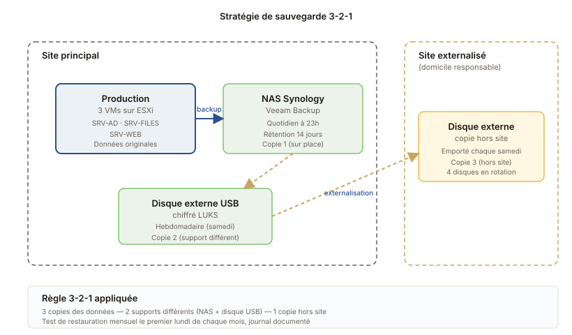

Sauvegarde 3-2-1 et plan de reprise d'activité
Stratégie de sauvegarde complète sur un parc virtualisé, avec tests de restauration mensuels et rédaction du PRA associé.
L'architecture de sauvegarde

Le principe 3-2-1
C'est la règle de base de la sauvegarde, simple à retenir :
- 3 copies des données importantes
- 2 supports différents (disque dur + bande, par exemple)
- 1 copie hors site (au minimum)
Si on respecte ça, on est protégé contre la suppression accidentelle, la panne matérielle, le vol, l'incendie, et le ransomware. Quasiment tout sauf la maladresse de l'admin qui restaure par-dessus.
L'environnement
Un parc simulé en TP : trois VMs sur un hyperviseur ESXi (un AD, un serveur de fichiers, un serveur web). On veut pouvoir restaurer chacune en cas de panne, et restaurer un fichier en particulier en cas de suppression accidentelle.
La stratégie mise en place
Sauvegarde quotidienne avec Veeam
Un job Veeam tous les jours à 23h, sauvegarde des trois VMs en mode image. Rétention 14 jours. Le tout sur un NAS Synology dédié à ça (premier support, sur place).
Externalisation hebdomadaire
Tous les samedis matin, un script copie les sauvegardes de la semaine vers un disque externe USB chiffré. Le disque est ensuite emporté hors site (chez le responsable). Rétention sur quatre semaines tournantes.
Test de restauration mensuel
Chaque premier lundi du mois, je restaure une des VMs dans un environnement de test isolé pour vérifier que les sauvegardes sont vraiment exploitables. Une sauvegarde qu'on n'a jamais restaurée, c'est juste un fichier qu'on espère valable.
Le plan de reprise d'activité
J'ai aussi rédigé le PRA, en suivant la structure recommandée par l'ANSSI dans son guide d'hygiène informatique. Le document de huit pages couvre :
- L'inventaire des services critiques et de leur RTO/RPO acceptables
- Les rôles et responsabilités en cas d'incident
- La procédure pas-à-pas de restauration de chaque VM
- La liste des prestataires à contacter (hébergeur, fournisseur de licences)
- La procédure de communication interne en cas d'incident long
- Le plan de test annuel du PRA lui-même
Ce que j'ai appris
Faire des sauvegardes c'est facile. Garantir qu'elles sont restaurables, c'est tout autre chose. Mon premier test de restauration a échoué : la VM remontait mais Active Directory était en boucle parce que la sauvegarde avait été prise pendant une réplication. Depuis je fais attention à la cohérence applicative.
Et le PRA, c'est pas un document qu'on écrit puis qu'on oublie. Si personne ne sait où il est ou comment l'utiliser, il sert à rien. Mon prof a insisté pour qu'on l'imprime et qu'on le mette dans un classeur dans le bureau du responsable, en plus du fichier numérique.